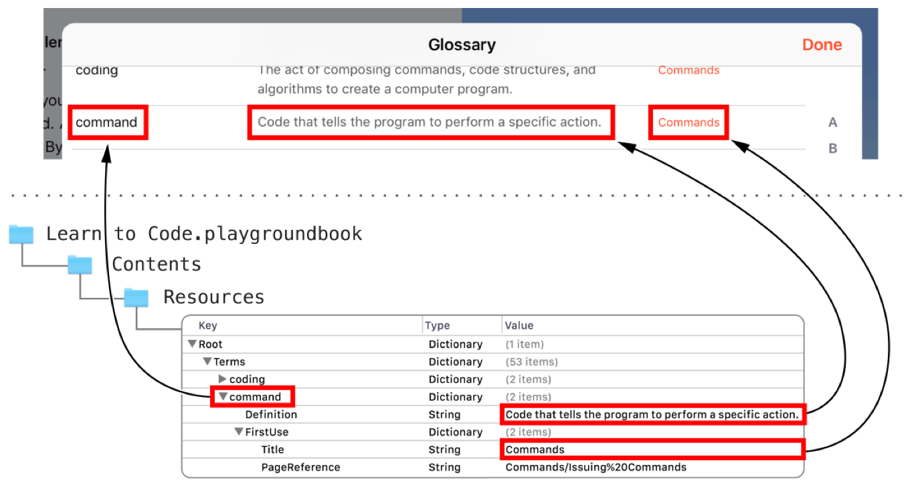
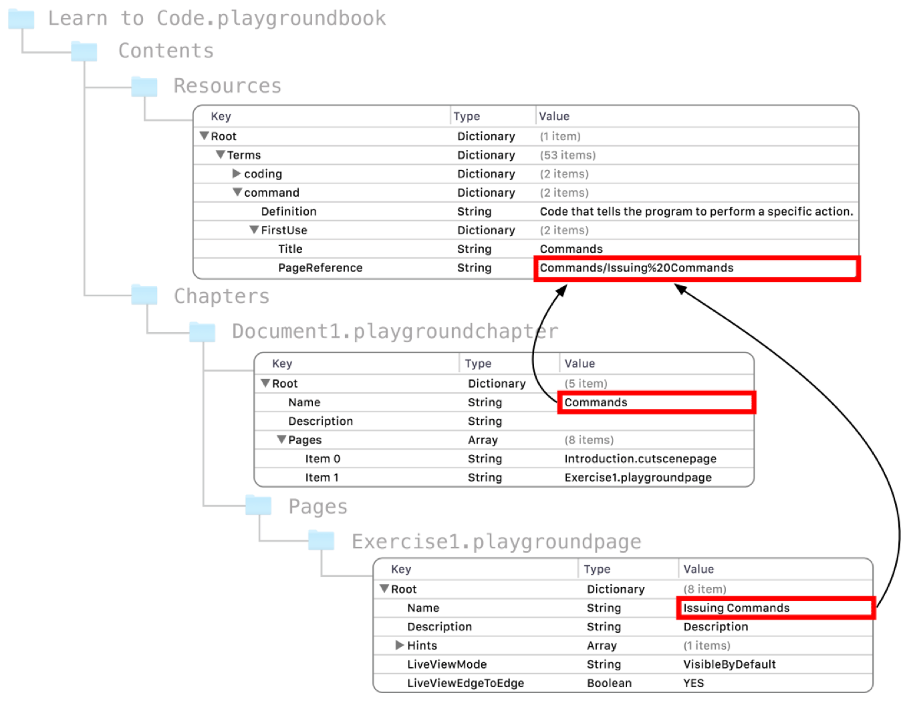
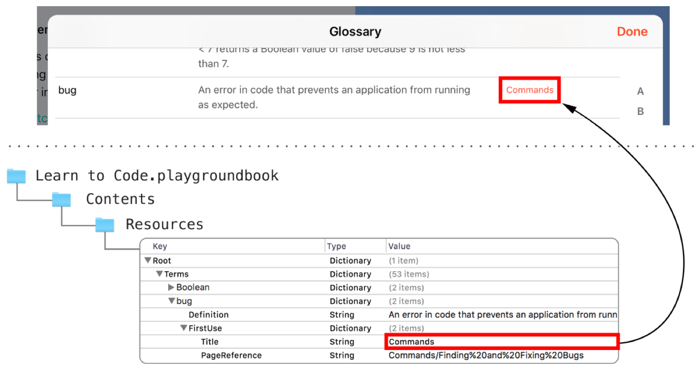

Glossary Property List
グロッサリープロパティリスト
The optional glossary property list contains key-value pairs defining the terms for the glossary of a book. The property list file is called Glossary.plist and is located in the Resources folder of the book at the path:
随意であるグロッサリープロパティリストは、あるブックのグロッサリーのための用語を定義するキー値ペアを含んでいます。プロパティリストファイルは、Glossary.plistと呼ばれます、そしてブックのResourcesフォルダに以下のパスで位置します：
<book name>.playgroundbook/Contents/Resources/Glossary.plist
Adding a Glossary.plist file to a book adds the Glossary of Terms menu item to the Tools menu.
Glossary.plistファイルをブックに加えると、Glossary of TermsメニューがToolsメニューに追加されます。
The entry for each glossary term has three parts, as shown in Figure 12-1:
各グロッサリー用語のための登録項目は、図 12-1で示されるように、３つの部分を持ちます：
Term: The concept defined by the glossary entry.
用語：グロッサリー登録項目によって定義される概念。Definition: The definition of the term.
定義：用語の定義。First-use link: A reference to the playground page introducing the term.
「使い始め」リンク：その用語を取り入れているプレイグラウンドページへの参照。
図 12-1 グロッサリー用語

Key List
キーのリスト
Table 12-1 describes each top-level key in the glossary property list, its type, and whether the key is required.
表 12-1 は、グロッサリープロパティリストでの各トップレベルキー、そしてそのキーが必須かどうかを記述します。
Key
|
Type
|
Description
|
Required
|
|---|---|---|---|
|
Dictionary |
A dictionary of glossary term dictionaries. See Terms Key.
|
✓ |
Term Name |
Dictionary |
The name of the concept described by the term dictionary. See Term Name Key.
|
✓ |
Terms Key
Termsキー
A dictionary of dictionaries. Each dictionary in the Terms dictionary describes a glossary term. The key name for a term dictionary is the glossary term itself.
いくらかのディクショナリからなるあるディクショナリTermsディクショナリの中の各ディクショナリは、１つのグロッサリー用語を記述します。ある用語ディクショナリのためのキー名は、グロッサリー用語それ自身です。
Figure 12-2 shows some of the glossary terms from Learn to Code 1, such as algorithm, arithmetic operator, and argument.
図 12-2 は、「Learn to Code 1」からいくつかのグロッサリー用語を示します、例えばalgorithm、arithmetic operator、そしてargumentなど。
図 12-2 グロッサリー用語名

Term Name Key
用語名キー
A dictionary defining a glossary term. The name of the key for the dictionary is used as the display name for the term in the full glossary and in the glossary term popover. Term name keys can contain spaces. Each term dictionary contains the definition of the term and an optional dictionary defining a link to the first use of the term.
グロッサリー用語を定義しているディクショナリ。ディクショナリのためのキーの名前は、完全なグロッサリーにおけるそしてグロッサリー用語ポップオーバーにおける用語のディスプレイ名が使われます。用語名キーは空白を含むことができます。各用語ディクショナリは、用語の定義と、用語の「使い始め」へのリンクを定義している任意のディクショナリを１つ含みます。
Figure 12-3 shows the dictionary for the term command. The term name is also used as the key for the dictionary. The value defined for Definition is displayed as the definition in the full glossary and in the glossary term popover. FirstUse defines the title and the target for the first-use link. (For more information on defining a target for a first-use link, see PageReference Key.)
図 12-3 は、用語commandのためのディクショナリを示します。用語名はまた、ディクショナリのためのキーとしても使われます。Definitionのために定義される値は、完全なグロッサリーでそしてグロッサリー用語ポップオーバーで定義として表示されます。FirstUse は、「使い始め」リンクのためのタイトルとターゲットを定義します。（「使い始め」リンクのためのターゲットを定義することに関するさらなる情報としてPageReferenceキーを見てください。）
図 12-3 グロッサリー用語ディクショナリ 
Table 12-2 describes each key for a term dictionary, its type, and whether the key is required.
表 12-2 は、用語ディクショナリのための各キー、それの型、そしてそのキーが必須かどうかを記述します。
Key
|
Type
|
Description
|
Required
|
|---|---|---|---|
|
String |
The definition for the glossary term. See Definition Key.
|
✓ |
|
Dictionary |
A dictionary defining a link to the page where the term is first used. See FirstUse Key.
|
|
Definition Key
Definitionキー
The definition for the glossary term, as a string. The definition is displayed in the full glossary and in the glossary term popover.
グロッサリー用語のための定義、文字列として。定義は、完全なグロッサリーでおよびグロッサリー用語ポップオーバーで定義として表示されます。
FirstUse Key
FirstUseキー
A dictionary that defines a link and title for the first use of a glossary term.
あるグロッサリー用語の「使い始め」に対するリンクとタイトルを定義するディクショナリ。
Table 12-3 describes each key for the FirstUse dictionary, its type, and whether the key is required.
表 12-3 は、FirstUseディクショナリに対する各キー、それの型、そしてそのキーが必須かどうかを記述します。
Key
|
Type
|
Description
|
Required
|
|---|---|---|---|
|
String |
The path to the page where the term is first used. See PageReference Key.
|
✓ |
|
String |
The title shown in the glossary as the first-use link. See Title Key.
|
✓ |
PageReference Key
PageReferenceキー
The path to the page that contains the first use of the glossary term.
グロッサリー用語の最初の使用を含むページへのパス。
chapter Name key value/page Name key value
A page reference is a two-component path specifying the location of a page in the playground book package. chapter Name key value is the value of the Name key of the Manifest.plist file for the chapter. For more information, see Name Key in Chapter Manifest. Similarly, page Name key value is the value of the Name key of the Manifest.plist file for the page. For more information, see Name Key in Playground Page Manifest.
ページ参照は、プレイグラウンドブックパッケージの中のあるページの位置を指定している２コンポーネントバスです。chapter Name key valueは、その章のためのManifest.plistファイルのNameキーの値です。さらなる情報として、Nameキーを章マニフェストで見てください。同様に、page Name key valueは、そのページのためのManifest.plistファイルのNameキーの値です。さらなる情報として、Nameキーをプレイグラウンドページマニフェストで見てください。
The path follows URI rules for encoding spaces and other special characters. For more information, see "Characters" in RFC 3986.
パスは、空白と他の特殊文字をエンコーディングするためのURIルールに従います。さらなる情報として、"Characters"をRFC 3986で見てください。
In Figure 12-4, the first use of the term command is in the chapter Document1.playgroundchapter on the page Exercise1.playgroundpage. Commands, the first component of the PageReference for command, is the value of the Name key of the Manifest.plist file for the chapter Document1.playgroundchapter. Issuing%20Commands, the second component of the path, is the value of the Name key of the Manifest.plist file for the page Exercise1.playgroundpage. The space character in Issuing Commands, the name of the playground page, is encoded with the string %20.
図 12-4において、用語commandの最初の利用は、ページExercise1.playgroundpageでの章Document1.playgroundchapterにおいてです。Commands、commandのためのPageReferenceの最初のコンポーネントは、章Document1.playgroundchapterのためのManifest.plistファイルのNameキーです。Issuing%20Commands、パスの第２のコンポーネントは、ページExercise1.playgroundpageのためのManifest.plistファイルのNameキーの値です。プレイグラウンドページの名前、Issuing Commandsの中の空白文字は、文字列%20でエンコードされます。
図 12-4 「使い始め」パス 
Title Key
Titleキー
The title displayed for the first-use link in the full glossary.
完全なグロッサリーでの「使い始め」リンクに対して表示されるタイトル。
In Figure 12-5, Title is set to Commands, the name displayed as the first-use link in the full glossary entry for bug.
図 12-5において、Titleは、bugに対する完全なグロッサリーでの「使い始め」リンクとして表示される名前、Commandsに設定されます。
図 12-5 Titleキー 
Copyright © 2016 Apple Inc. All rights reserved. Terms of Use | Privacy Policy | Updated: 2016-10-24